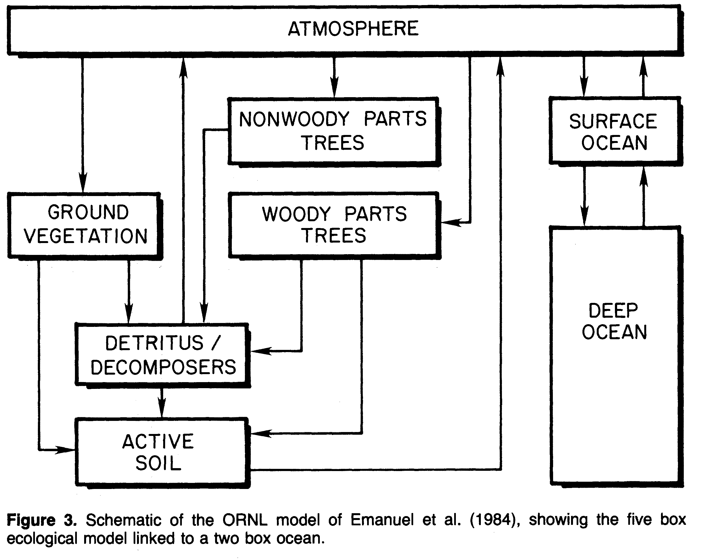
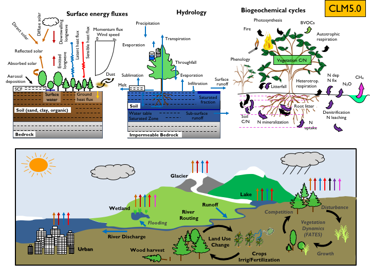
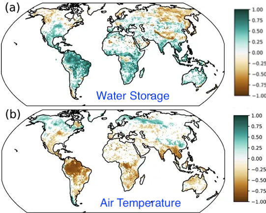

Picking up from where we left off last time: “Today’s models of the biosphere suck.” After all the opportunities for refinement, the question is, “Why?” Let’s look at how such models have changed since 1984.

According to this paper, the non-ocean part of the model considered 24 variables. It used no spatial resolution of the data—Earth was modeled as eight compartments divided three ways: “trees”, “vegetation” (not trees), and “ocean”. Notably, a semantic distinction between forests and not-forests was already in place, even though it has no practical basis in biology or biochemistry—the differences between annual & perennial and C3 & C4 are much more impactful.1
In the intervening years, computer power has grown, and models have gotten more numerous and complex. It’s fruitless to be comprehensive, so I picked one: The Community Land Model (CLM) version 5.0, developed by the National Center for Atmospheric Research. This model has been incorporated into the Community Earth System Model (CESM), an open-source model of the planet. You can think of it as Earth’s “Second Life”.
In this model, the independent variables (such as they are) are buried deep in the guts of the code. So when I considered downloading it to count them, there was an ominous warning:
Consequently, I figured that an estimate would be fine: There are about 2 billion variables per configuration2 (many will depend on one another, but it’s still a lot more than 24!). Pictorially, many more processes are considered, each with its own error limits. Thus:

Now, I can count: There are more modeled phenomena than modeled variables in 1984! Yet, like all models, the 1984 model gave an imprecise answer that was arguably useful. Based on the last installment, even modern models still aren’t precise enough to tell us, for example, whether land use by humans or clearing forests is a good thing or a bad thing!3
To this topic, as I have pointed out before4, clearcutting the rainforest for durable lumber and planting sugarcane in its place is a viable strategy to improve terrestrial carbon capture--bury as much carbon as humans emit, and the math works out. But, modelers still rely on an artificial division into “trees” and “not-trees” rather than considering capture efficiency (C3 vs. C4 biochemistry) and durability (annuals vs. perennials). Specifically, The CESM uber-model considers no less than 32 crops (both irrigated and non-irrigated), while capture by the entire forest canopy is modeled in 3D (not just the top leaves). Moreover, while the removal of forest carbon by wildfires is considered, the removal of agricultural carbon by harvest appears to be ignored—Terra ex machina.
Deep in the jargon, some modelers appear to acknowledge that new-and-improved models run on supercomputers have failed to live up to expectations. It turns out that data to help identify the source of the disappointment exists: Some growing seasons capture (and release) more carbon than others. This variability can be seen in primary observations and the measurement of CO2 concentrations. CESM also shows year-over-year differences, but they are less variable. Two additional observations, the Total Water Storage and Air Temperature, can be inferred by satellite and compared to models.5 Likewise, CESM shows less variability than observed for these measurements. As a result, the models are more uniform than reality.
So, the literature proposes a testable hypothesis, “[T]he low IAV of net terrestrial C exchange could be caused by low climate variability in the coupled model.” In other words, models suggest that the world is more predictable than it is. Let’s look at the Net Ecosystem Production (modeled CO2 capture) variation between modeled and measured:

Here’s my take: Look at the Brazilian rainforest. The models predict that water storage and air temperature significantly contribute to the error. However, the rainforest stores a lot of water but can’t use it as effectively as the model suggests. And the temperature dependence of the biosphere is inadequately modeled at the equator. So, the difficulty in predicting climate extends to the difficulty in predicting the biosphere’s response to change, particularly in areas like rainforests that humans don’t impact. Plus, data is lacking. Is this confirmation? Not really, but it’s hopeful that models may improve with more measurements in extreme climates.
It makes common sense: Every farmer knows that small changes (temperature, water, etc.) can significantly change yield (due to frost, flooding, drought, etc.). The models confirm that hypersensitivity but adding complexity doesn’t do anything about it. It’s the butterfly effect on steroids!
I think that’s all that’s needed on this topic—I’d love to see what would happen if crop irrigation were removed from the models or if arable land were doubled. But I don’t have access to a supercomputer, and it’s a self-serving calculation that would help my education instead of doing what I intend: Helping my readers.

As far as I can tell, the spatial resolution is about 0.1 degree, with roughly 1,000 parameters for each area with active vegetation (based on the “Functionally Assembled Terrestrial Ecosystem Simulator”, or FATES). A third of the Earth is covered by land.
I covered this in an earlier installment, but it was buried. According to a 2019 IPCC report:
The total net land-atmosphere flux of CO2 on both managed and unmanaged lands very likely provided a global net removal from 2007 to 2016 according to models (-6.0 ± 3.7 GtCO2 yr–1, likely range). This net removal is comprised of two major components: (i) modelled net anthropogenic emissions from AFOLU are 5.2 ± 2.6 GtCO2 yr–1 (likely range) driven by land cover change, including deforestation and afforestation/reforestation, and wood harvesting (accounting for about 13% of total net anthropogenic emissions of CO2) (medium confidence), and (ii) modelled net removals due to non-anthropogenic processes are 11.2 ± 2.6 GtCO2 yr–1 (likely range) on managed and unmanaged lands, driven by environmental changes such as increasing CO2, nitrogen deposition and changes in climate (accounting for a removal of 29% of the CO2 emitted from all anthropogenic activities (fossil fuel, industry and AFOLU) (medium confidence).
In layperson’s terms, we think biology removes a lot of carbon, but we’re not that sure of the net effect.
Water storage from space may seem challenging, but groundwater at the scale of Earth changes the local gravity!